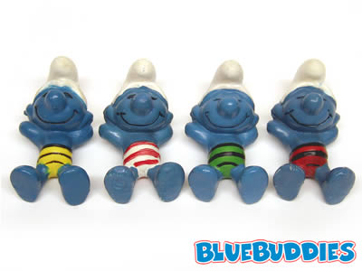

Why Small Projects?
by Darius Kazemi
(Use left/right arrow keys or touch to go forward/back. Press ESC to view as a single document.)
2009: 1 project, culmination of ~200 hours of research/work
73 Projects, ~350 hours of work (4.8 hours/project)
Bots
- Latour Swag
- Darius at GDC
- Am I Rite Bot
- Professor Jocular
- Six Word Sale
- Two Headlines
- Boazim Bot
- XOXO_ebooks
- Stealing from Master
- Make a GIF of…
- AutoVids
- FactBot Carrot
- FactBot Rutabaga
- Kenosha Kid
- Alt Universe Prompts
Tumblrs
Games
Events
Sites / Generators
- RapBot
- Let Me Moogle That For You
- All the Things
- Clickbait
- Porpenslime
- Fuck Videogames
- GenGen
- Game Pitch Creator
- q0rt Movies
- TIMEKILL.CPP
- Uncle Darius' Instant Chiasmus
- Mario Clouds Critique
- Nouns
- Context Explorer
- Doctor Whaaa
- This Just In
- Why is this still a thing?
- Core Values
- jqProclamations
- and Philosophy
- Penny Arcade Strip Generator
- 10rd Tags
- Stew Generator
- Spelunky Generator Lessons
- The Three Least Powerful Women in Games
- Blank School
- What it feels like in Boston right now
- Novel 1
- Redux Fonts
- Novel 2 / Teens Wander Around a House
- You Must Be
- You Must Be (Minus 8 Words)
- Cyberpunk Generator
- Random Friday
- Last Words
- Enhance the Experience of the Millennials
Code
How did I get here?
videogames

Game Jams

"Finish Your Game"


Plane Jams

But how
Write everything down
Attempt EVERYTHING
You are making an ECOSYSTEM OF PROJECTS
a few weeks later...
Know when to stop

Listen to your materials

Try variations on a theme
The Grind

Benefits of small projects

THANKS
Darius Kazemi, Feb 9 2014
Extra thanks to:
Courtney Stanton
Michael Brough
This slide deck is powered by Greg Smith's absolutely incredible, dead-simple tool Slide.